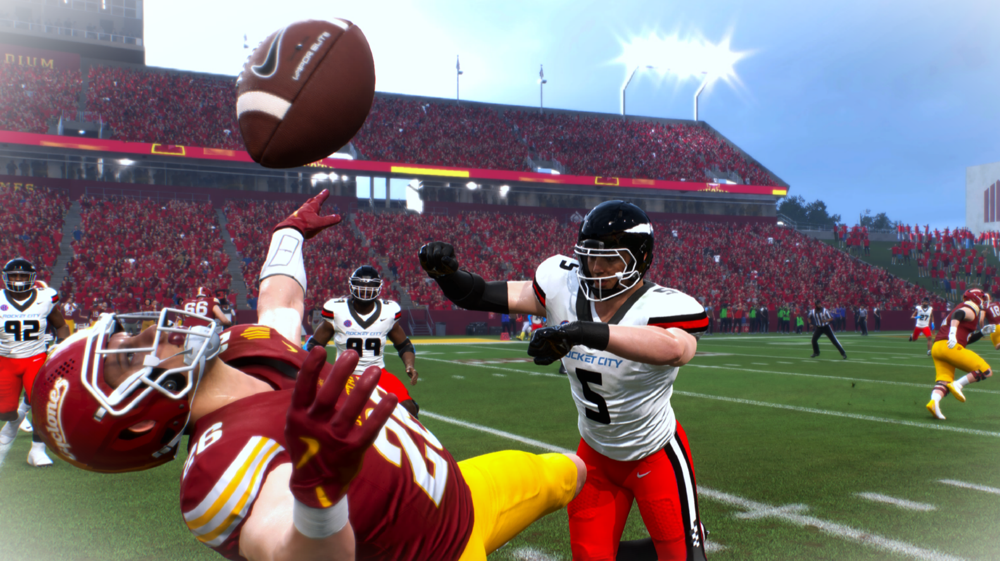

Tim Missile
#5 | Middle Linebacker (MIKE) | Junior
Norman, Oklahoma | 6'8", 267 lbs
Player Information
| Detail | Info |
|---|---|
| Full Name | Tim Missile |
| Number | #5 |
| Position | Middle Linebacker (MIKE) |
| Class | Junior |
| Height / Weight | 6'8" / 267 lbs |
| Hometown | Norman, Oklahoma |
| Status | Returns |
Awards and Honors
| Award |
|---|
| Chuck Bednarik Award (Defensive Player of the Year) |
| Bronco Nagurski Trophy (Best Defensive Player) |
| Dick Butkus Award (Best Linebacker) |
| National First Team All-American |
| SEC First Team All-Conference |
Season 1 Defensive Stats
| Stat | Value |
|---|---|
| Games Played | 13 |
| Total Tackles | 110 |
| Tackles For Loss | 29 |
| Sacks | 10 |
| Interceptions | 5 |
| Interception Return TD | 1 |
| Forced Fumbles | 5 |
| Fumble Recoveries | 1 |
| Pass Deflections | 6 |
| Total Turnovers Created | 11 (5 INT + 5 FF + 1 FR) |
Top 3 Performances
| Game | Tackles | TFL | Sacks | Turnovers | Highlight |
|---|---|---|---|---|---|
| Week 1 @ #17 Iowa State (W 41-13) | 7 | 4 | 0 | 3 INT, 1 FF | Three-interception game including a pick-six. SEC + National Defensive POTW. |
| Week 14 @ California (W 44-27) | 16 | 4 | 1 | 1 INT | Set single-game tackles record with 16. Dominated the season finale from sideline to sideline. |
| Week 13 @ Georgia State (W 65-3) | 9 | 3 | 1 | 1 FF | Knocked Georgia State's starting QB out of the game with a devastating hit. Immediately forced a fumble after Williams threw an INT, erasing the turnover. |
Highlight

Player Storyline | The Lurker
Tim Missile was undoubtedly the best defensive player in college football in 2025. Standing at 6'8” and 267 pounds, he looked like a defensive lineman who someone accidentally lined up five yards off the ball. But what made him so terrifying was that at that size, he moved like a safety.
He could cover slot receivers. He could chase down running backs from the backside. He could drop into zone coverage, read the quarterback's eyes, and pick off passes that no linebacker had any business intercepting, and if he got a clean hit on you, you were dropping the ball.
He accounted for 11 turnovers by himself, which was nearly half of the team's total takeaways from one player.
He won three national awards, the Bednarik, the Nagurski, and the Butkus, sweeping every major defensive honor in the sport. He was a first-team All-American and first-team All-SEC.
Missile is a senior entering into Year 2, his junior season will possibly go down as the greatest defensive performance this program has ever seen.